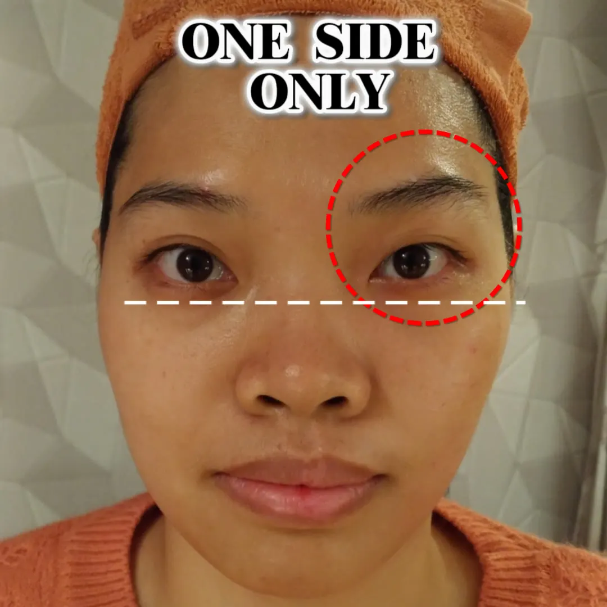
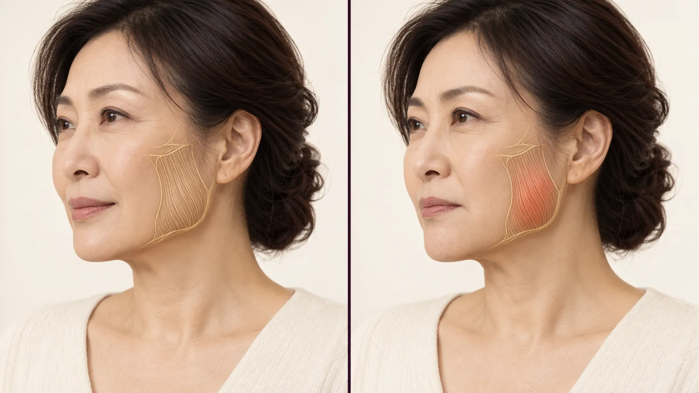
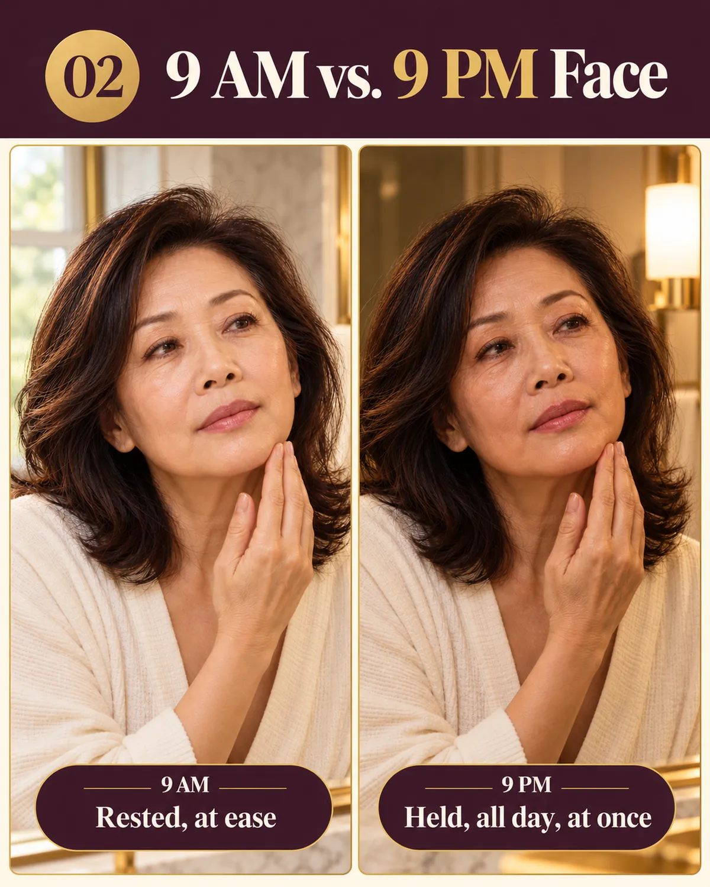

La prueba visible
Mismo rostro. Mismo día.
Un lado, cinco minutos.
Sin filtros ni retoques. Un lado del rostro recibió unos minutos de bojin suave; el otro se dejó tal como amaneció. Por eso tantas mujeres confían en el método incluso antes de probarlo: pueden verlo con sus propios ojos.

El lado señalado recibió cinco minutos suaves. El otro lado se mantuvo intacto.
Cómo observarlo
Mira los dos ojos, uno al lado del otro.
- La ceja se sitúa un toque más alta en el lado trabajado, abriendo por completo la mirada.
- El ojo se ve más descansado, con menor pesadez y una ligera elevación en la comisura exterior.
- Misma iluminación, mismo ángulo, mismo instante. La única diferencia son cinco minutos de liberación consciente y suave.
Los resultados individuales varían y son sutiles y temporales. Se trata de autocuidado consciente, no de tratamiento médico.
Y esto es todo lo que hizo
La ‘Liberación del Inicio de la Ceja’ en 3 minutos.
Sin herramientas complejas, sin experiencia previa y sin tirones en la piel. Solo una varita suave de acero inoxidable, la presión justa y ligera, y el punto exacto en el inicio de la ceja que la mayoría pasa por alto: la técnica detrás del lado que acabas de observar.
Caso 02 · Tercio Inferior y Mandíbula
Apretar la mandíbula ensancha la parte inferior del rostro con el tiempo.
El estrés acumulado durante el día y el hábito nocturno de apretar los dientes mantienen los músculos maseteros acortados y rígidos. Esto tira de la línea mandibular hacia abajo y genera una apariencia más pesada y cuadrada.
- Liberación, no fuerza: Aliviar la fascia en el ángulo mandibular permite que el músculo recupere su longitud natural en reposo.
- Contorno mandibular más definido: Drenar la congestión de líquidos acumulados a lo largo del cuello devuelve la definición natural sin agujas ni tiempos de recuperación.


Caso 03 · Relajación Vespertina
Por qué tu rostro se ve más cansado a las 9 PM que a las 9 AM.
Casi nunca se trata de envejecimiento repentino ni daño. Son 12 horas de entrecerrar los ojos frente a pantallas, el efecto de la gravedad y líquidos estancados bajo un tejido fatigado.
- La pausa vespertina de 3 minutos: Un pase tranquilo por cejas, pómulos y cuello antes de acostarte evita que la tensión se acumule durante la noche.
- Despierta con menor hinchazón: Al despejar los líquidos retenidos durante el día antes de dormir, los ojos amanecen visiblemente más despejados y ligeros.
La Biomecánica
¿Por qué una liberación de 5 minutos genera una diferencia tan evidente?
No es magia ni una intervención quirúrgica permanente. Es simplemente comprender lo que se encuentra debajo de tu piel.
1. Descongestión de fluidos: Los vasos linfáticos faciales no cuentan con una bomba interna propia. Cuando la gravedad y la rigidez muscular comprimen las vías superficiales, los líquidos se acumulan en zonas de piel fina (ojos y contorno mandibular). Un pase rítmico y direccional actúa como un alivio mecánico que favorece el drenaje fluido natural.
2. Descompresión fascial: Una lámina continua de tejido conectivo (fascia) envuelve los músculos faciales desde la frente hasta el cuello. Cuando ciertas áreas se anudan por estrés, tiran de los tejidos vecinos y rompen el equilibrio armónico. Una varita suave de bojin permite acceder con precisión a esos puntos de anclaje que las yemas de los dedos no logran definir con igual suavidad.
3. Constancia respetuosa: A diferencia de los tirones bruscos o la fricción agresiva, un contacto agradable y de baja presión construye un hábito de autocuidado sostenible que mantiene los tejidos flexibles y descansados semana tras semana.
Demostración educativa y de autocuidado consciente. No constituye asesoramiento médico, diagnóstico ni tratamiento clínico.
En sus propias palabras
Hice el curso de cabeza y rostro sin tener ninguna experiencia previa, y la enseñanza paciente y minuciosa de Yu-Ting lo hizo muy fácil de aprender. Una clase maravillosa. — Mercy W., Taiwán
Yu-Ting viajó especialmente para enseñarnos en Hong Kong. Enseña con una dedicación genuina: explicaciones claras y totalmente prácticas. — Kit H., Hong Kong
Gracias, Yu-Ting, por una forma de enseñar tan delicada, paciente y cercana. Aprendí con gusto y pude integrarlo con rapidez en mi día a día. — Nadia L., Malasia
Las experiencias individuales varían. Autocuidado consciente, no es tratamiento médico.
Pruébalo tú misma esta noche
Comprueba la diferencia en un solo lado
en tu propio rostro.
La forma más rápida de comprenderlo es sentirlo en primera persona. Desbloquea el video gratuito de 3 minutos ‘Guía Ocular’, practicalo frente al espejo y compara un lado con el otro en cuestión de minutos.
Ver el Video Demostrativo Gratuito (3 min) → Hacer el Cuestionario de 1 Min
Demostración educativa 100% gratuita · Sin agujas ni herramientas complejas para empezar.